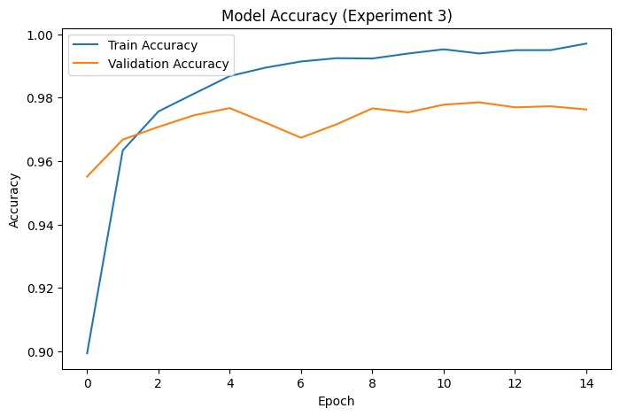

作業要做什麼
用全連結神經網路（DNN）打造自己的手寫數字辨識模型。
我做了什麼
- 讀入 MNIST 資料集，把 28×28 的影像攤平成 784 維、除以 255 標準化，標籤做 One-hot Encoding。
- 實驗一（基準）：2 層隱藏層（128、64），用 MSE 與 SGD（learning rate 0.087），訓練 10 個 epoch。
- 實驗二：加深到 4 層隱藏層（256、128、64、32），損失函數改成 categorical crossentropy，SGD（learning rate 0.05）。
- 實驗三（最終版）：同樣 4 層架構，優化器改成 Adam，batch size 128、15 個 epoch、20% 當驗證集，並畫出訓練與驗證準確率曲線。
- 用 Gradio 的 Sketchpad 做成手寫畫板，畫一個數字就能看到前三名的辨識結果。

結果與發現
- 實驗一：第 1 個 epoch 準確率只有 26.04%，第 10 個 epoch 驗證準確率 90.59%。用 MSE 處理多分類問題，梯度下降很慢。
- 實驗二：改用 crossentropy 後，第 1 個 epoch 就有 75.80%，第 10 個 epoch 驗證準確率提升到 97.22%。
- 實驗三：改用 Adam 後學習很穩定，訓練準確率 99.70%，獨立測試集最終正確率 97.85%，沒有出現嚴重過擬合。
- 影響最大的是損失函數：同樣用 SGD，只是從 MSE 換成 crossentropy，收斂速度就差很多。
心得
這次最大的收穫是自己做實驗比較。一開始用 MSE，準確率爬得很慢，我還以為是模型太小；換成 crossentropy 之後第一個 epoch 就跳到 75%，才知道選對損失函數有多重要。
最後做成手寫畫板，自己畫數字給模型猜的時候，比只看準確率數字更有感覺。
AI 協助說明
這份作業沒有使用 AI 協助。本頁的整理由 Claude 依我的作業內容協助撰寫，我確認後採用。